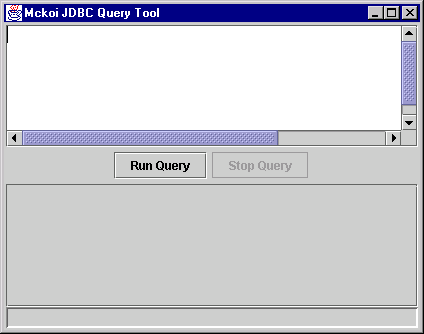
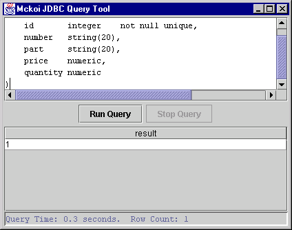
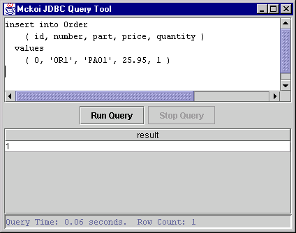
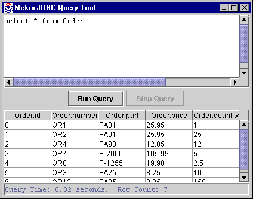
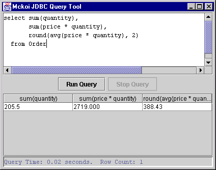

Mckoi SQL Database as an embedded application
|
|
Home / Documentation / FAQ / Support / Download Mckoi SQL Database as an embedded application |
The following program code demonstrates how to embed a local Mckoi database within your JavaTM application;
import java.sql.*; public class EmbeddedDatabaseDemo { public static void main(String[] args) { // Register the Mckoi JDBC Driver try { Class.forName("com.mckoi.JDBCDriver").newInstance(); } catch (Exception e) { System.out.println( "Unable to register the JDBC Driver.\n" + "Make sure the JDBC driver is in the\n" + "classpath.\n"); System.exit(1); } // This URL specifies we are connecting with a local database // within the file system. './db.conf' is the path of the // configuration file of the database to embed. String url = "jdbc:mckoi:local://./db.conf"; // The username / password to connect under. String username = "admin_user"; String password = "aupass00"; // Make a connection with the local database. Connection connection; try { connection = DriverManager.getConnection(url, username, password); } catch (SQLException e) { System.out.println( "Unable to make a connection to the database.\n" + "The reason: " + e.getMessage()); System.exit(1); return; } try { // .... Use 'connection' to talk to database .... // Close the connection when finished, connection.close(); } catch (SQLException e) { System.out.println( "An error occured\n" + "The SQLException message is: " + e.getMessage()); return; } } }The
java.sql.Connectionobject is used to communicate with the local database.It's important to note here that you can only have one Java virtual machine connected to a local database at the same time. If more than one VM is connected to the same local database then the behaviour is undefined and a likely result will be database corruption. If you wish for there to be more than one connection to the same database, use Mckoi SQL Database as a multi-threaded multi-user server (see section 'Mckoi SQL Database as a multi-user server').
There are working demonstrations of creating / populating and querying a database in the
/demodirectory of the installation.
JDBCQueryTool is a simple utility program developed for Mckoi SQL Database. It can connect to a Mckoi database, run queries and display the results graphically. It uses JavaTM Swing/JFC for the user interface. JDBC Query Tool is an interactive tool that is useful for testing queries, examining and setting up a database.
To use the JDBC Query Tool on a local database, use the following command;
java -cp mckoidb.jar com.mckoi.tools.JDBCQueryTool \ -url "jdbc:mckoi:local://./db.conf" \ -u "admin_user" -p "aupass00"This is assuming the configuration file is at path
./db.confin the file system, and the username / password is set the same as from the 'Getting Started' section.If all was successful, you'll get a window that looks like this;

Lets create a new table in the database. Enter the following SQL query and click the Run Query button;
CREATE TABLE Order ( id INTEGER NOT NULL UNIQUE, number STRING(20), part STRING(20), price NUMERIC, quantity NUMERIC )The screen should end up looking like this;

Now populate the Order table with some entries. Enter the following SQL Query (or put in some different values if you like) and click on the Run Query button.
INSERT INTO Order ( id, number, part, price, quantity ) VALUES ( 0, 'OR1', 'PA01', 25.95, 1 )The screen should look like this;

Enter as many additional records into the Order table as you like.
Now on to a couple of queries on the data in the table. To look at all the records in the Order table, enter the following;
SELECT * FROM OrderYou'll get a screen similar to the following (depending on how many order entries you entered);

Or a more complex query that calculates the total quantity of parts in all orders, the total value of all orders, and the average value of each order...

Last Updated: Mon Aug 16 00:27:18 PDT 2004
Mckoi SQL Database Copyright © 2000 - 2004 Diehl and Associates, Inc. All rights reserved.
|